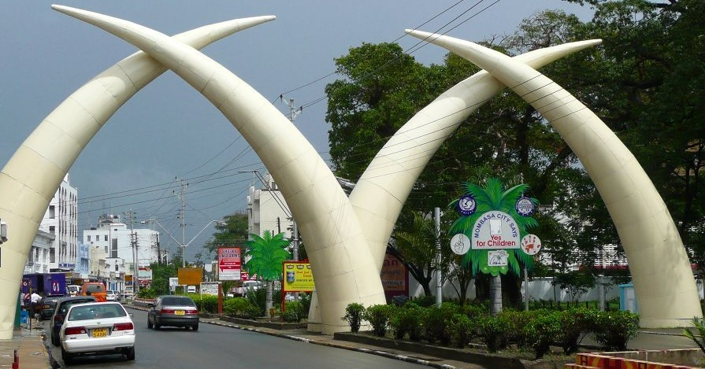
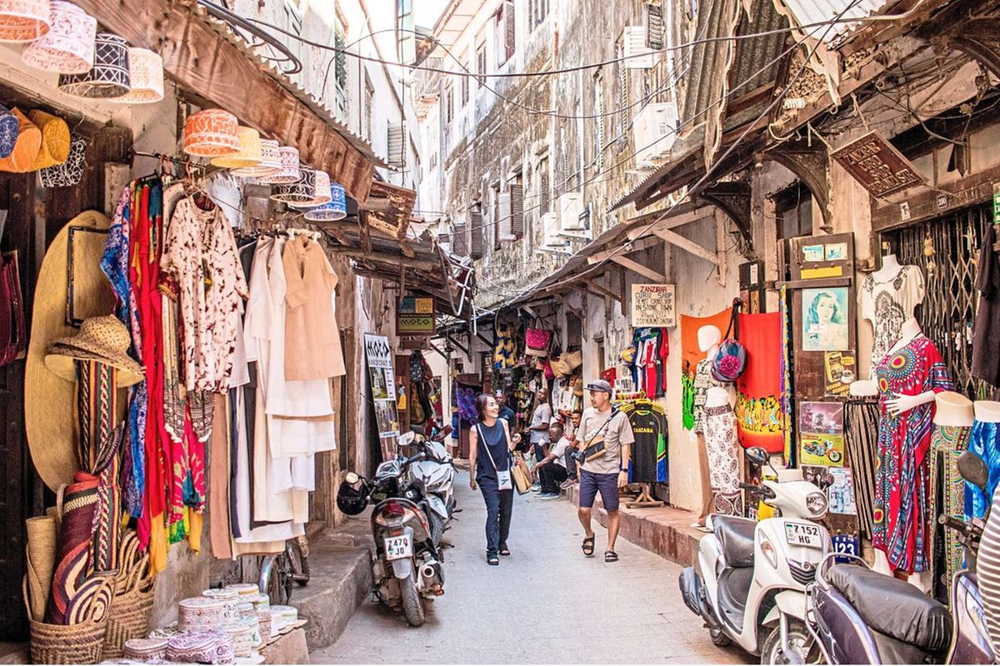

My Favorite travel destinations
Mombasa
-
Mombasa is a coastal town in Kenya. It's a beautiful place to come for vacation. The people in Mombasa speak Swahili mainly though there are some part of the coast where they speak Giriama and digo which are the native language. The food here is delicious and mouth watering.
-
Below is a picture of the famous ivory tusks that is synonymous with the Mombasa town
 -
For more information click Mombasa Town
Maasai Mara
-
Maasai mara is a national game reserve is in Narok, Kenya. It is named in honor of the Maasai people who are warrior and great hunters. The reserve host a number of wildlife e.g Lions, leopards, giraffes, buffalos just to mention a few. The hotels are pristine and the people and welcoming.
-
Below is a picture of flora and fauna found in Maasai mara reserve.
-
For more information click The Mara
Zanzibar
-
Zanzibar is a tourist town found in the East african coast. Tourism flourishes because of the warm weather and very welcoming inhabitants. The foods are out of this world, the cuisine is a mixture of both arab and the bantu people resding here. Fishing is the main source of income to its people apart from agricultural products like clove, nutmeg, cinnamon and black pepper.
-
Below is a picture of Zanzibar down town market with arab architecture.
 -
For more information click Zanzibar